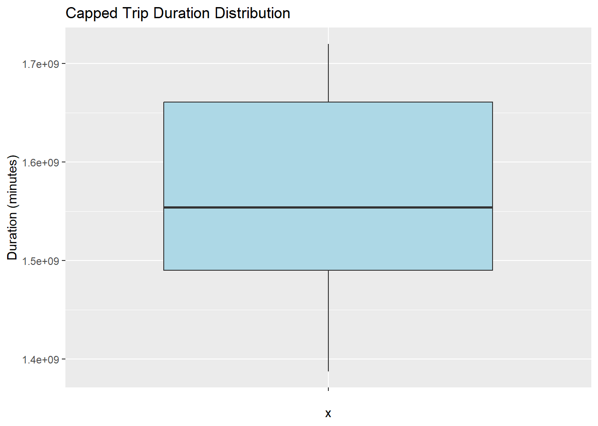
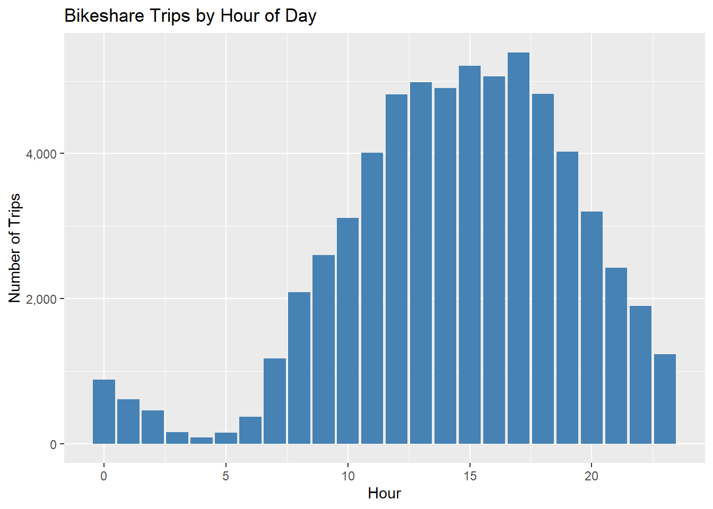
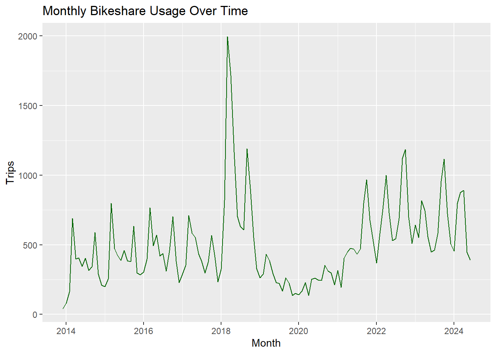
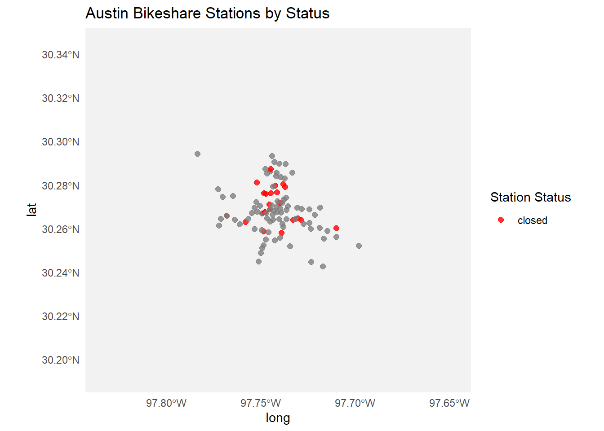

Code
# load libraries
library(tidyverse)
library(lubridate)
library(janitor)
library(ggplot2)
library(scales)# load libraries
library(tidyverse)
library(lubridate)
library(janitor)
library(ggplot2)
library(scales)# Load datasets
bikeshare_df <- read_csv("bikeshare_trips.csv")Warning: One or more parsing issues, call `problems()` on your data frame for details,
e.g.:
dat <- vroom(...)
problems(dat)Rows: 63657 Columns: 10
── Column specification ────────────────────────────────────────────────────────
Delimiter: ","
chr (6): subscriber_type, bike_id, bike_type, start_time, start_station_name...
dbl (4): trip_id, start_station_id, end_station_id, duration_minutes
ℹ Use `spec()` to retrieve the full column specification for this data.
ℹ Specify the column types or set `show_col_types = FALSE` to quiet this message.station_df <- read_csv("bikeshare_station.csv")Rows: 101 Columns: 16
── Column specification ────────────────────────────────────────────────────────
Delimiter: ","
chr (9): name, status, location, address, alternate_name, property_type, pow...
dbl (6): station_id, city_asset_number, number_of_docks, footprint_length, f...
lgl (1): image
ℹ Use `spec()` to retrieve the full column specification for this data.
ℹ Specify the column types or set `show_col_types = FALSE` to quiet this message.# Clean column names
bikeshare_df <- clean_names(bikeshare_df)
station_df <- clean_names(station_df)glimpse(bikeshare_df)Rows: 63,657
Columns: 10
$ trip_id <dbl> 4905900, 16994123, 16710917, 23716076, 3310007, 263…
$ subscriber_type <chr> "24 Hour Walk Up Pass", "U.T. Student Membership", …
$ bike_id <chr> "853", "412", "1641", "2122B", "523", "19775", "158…
$ bike_type <chr> "classic", "classic", "classic", "electric", "class…
$ start_time <chr> "2015-05-17 14:07:53.000000 UTC", "2018-03-31 16:55…
$ start_station_id <dbl> 2497, 2499, 3513, 3794, 2822, 2552, 3793, 2539, 379…
$ start_station_name <chr> "11th/Congress @ The Texas Capitol", "City Hall / L…
$ end_station_id <dbl> 2497, 2501, 2563, 2544, 2495, 4058, 3792, 2539, 254…
$ end_station_name <chr> "11th/Congress @ The Texas Capitol", "5th & Bowie",…
$ duration_minutes <dbl> 38, 6, 11, 13, 12, 32, 5, 59, 4, 48, 8, 22, 8, 15, …glimpse(station_df)Rows: 101
Columns: 16
$ station_id <dbl> 1007, 1008, 2500, 2502, 2536, 2538, 2541, 2545, 2546…
$ name <chr> "Lavaca & 6th", "Nueces @ 3rd", "Republic Square", "…
$ status <chr> "closed", "closed", "closed", "closed", "closed", "c…
$ location <chr> "(30.26889, -97.74525)", "(30.26694, -97.74939)", "(…
$ address <chr> "601 Lavaca St.", "311 Nueces", "425 W 4th Street", …
$ alternate_name <chr> NA, NA, NA, NA, NA, NA, NA, NA, NA, NA, NA, NA, NA, …
$ city_asset_number <dbl> NA, NA, NA, NA, NA, NA, NA, NA, NA, NA, NA, NA, NA, …
$ property_type <chr> NA, NA, NA, NA, NA, NA, NA, NA, NA, NA, NA, NA, NA, …
$ number_of_docks <dbl> NA, NA, NA, NA, NA, NA, NA, NA, NA, NA, NA, NA, NA, …
$ power_type <chr> NA, NA, NA, NA, NA, NA, NA, NA, NA, NA, NA, NA, NA, …
$ footprint_length <dbl> NA, NA, NA, NA, NA, NA, NA, NA, NA, NA, NA, NA, NA, …
$ footprint_width <dbl> NA, NA, NA, NA, NA, NA, NA, NA, NA, NA, NA, NA, NA, …
$ notes <chr> NA, NA, NA, "moved to Pedernales/2nd. Original city …
$ council_district <dbl> 9, 9, 9, 9, 3, 1, 1, 9, 9, 3, 9, 5, 3, 3, 9, 9, 8, 1…
$ image <lgl> NA, NA, NA, NA, NA, NA, NA, NA, NA, NA, NA, NA, NA, …
$ modified_date <chr> "2021-01-04 00:00:00.000000 UTC", "2021-01-04 00:00:…bikeshare_df <- bikeshare_df %>%
mutate(
start_time = ymd_hms(start_time),
duration_minutes = as.numeric(start_time, units = "mins")
)# Use IQR method to cap outliers
q1 <- quantile(bikeshare_df$duration_minutes, 0.25, na.rm = TRUE)
q3 <- quantile(bikeshare_df$duration_minutes, 0.75, na.rm = TRUE)
iqr <- q3 - q1
lower_bound <- q1 - 1.5 * iqr
upper_bound <- q3 + 1.5 * iqr
bikeshare_df <- bikeshare_df %>%
mutate(duration_capped = pmin(pmax(duration_minutes, lower_bound), upper_bound))
# Add a boxplot to confirm outlier handling
ggplot(bikeshare_df, aes(x = "", y = duration_capped)) +
geom_boxplot(fill = "lightblue") +
labs(title = "Capped Trip Duration Distribution", y = "Duration (minutes)")
bikeshare_df %>%
mutate(hour = hour(start_time)) %>%
count(hour) %>%
ggplot(aes(x = hour, y = n)) +
geom_col(fill = "steelblue") +
scale_y_continuous(labels = comma) +
labs(title = "Bikeshare Trips by Hour of Day", x = "Hour", y = "Number of Trips")
bikeshare_df %>%
mutate(year_month = floor_date(start_time, "month")) %>%
count(year_month) %>%
ggplot(aes(x = year_month, y = n)) +
geom_line(color = "darkgreen") +
labs(title = "Monthly Bikeshare Usage Over Time", x = "Month", y = "Trips")
library(sf)Warning: package 'sf' was built under R version 4.4.3Linking to GEOS 3.13.0, GDAL 3.10.1, PROJ 9.5.1; sf_use_s2() is TRUElibrary(ggplot2)
library(maps)Warning: package 'maps' was built under R version 4.4.3
Attaching package: 'maps'The following object is masked from 'package:purrr':
map# Extract latitude and longitude from 'location' column if present
if ("location" %in% names(station_df)) {
station_df <- station_df %>%
mutate(
location = str_remove_all(location, "[()]"),
latitude = as.numeric(str_split_fixed(location, ",\\s*", 2)[,1]),
longitude = as.numeric(str_split_fixed(location, ",\\s*", 2)[,2])
)
# Use extracted columns for mapping
station_df$lat <- station_df$latitude
station_df$lon <- station_df$longitude
}
# Convert station_df to sf object
station_sf <- station_df %>%
filter(!is.na(lat), !is.na(lon)) %>%
st_as_sf(coords = c("lon", "lat"), crs = 4326)
# Get Texas map for context (Austin is in Texas)
texas_map <- map_data("state") %>% filter(region == "texas")
bbox <- st_bbox(station_sf)
xlim_buffered <- bbox[c("xmin", "xmax")] + c(-0.05, 0.05)
ylim_buffered <- bbox[c("ymin", "ymax")] + c(-0.05, 0.05)
# Plot stations colored by status
ggplot() +
geom_polygon(
data = texas_map,
aes(x = long, y = lat, group = group),
fill = "gray95", color = "gray80"
) +
geom_sf(
data = station_sf,
aes(color = status),
size = 2, alpha = 0.8
) +
scale_color_manual(values = c("open" = "green", "closed" = "red")) +
# --- AMENDED LINE USING THE AUTOMATIC BOUNDS ---
coord_sf(xlim = xlim_buffered, ylim = ylim_buffered) +
labs(
title = "Austin Bikeshare Stations by Status",
color = "Station Status"
) +
theme_minimal()